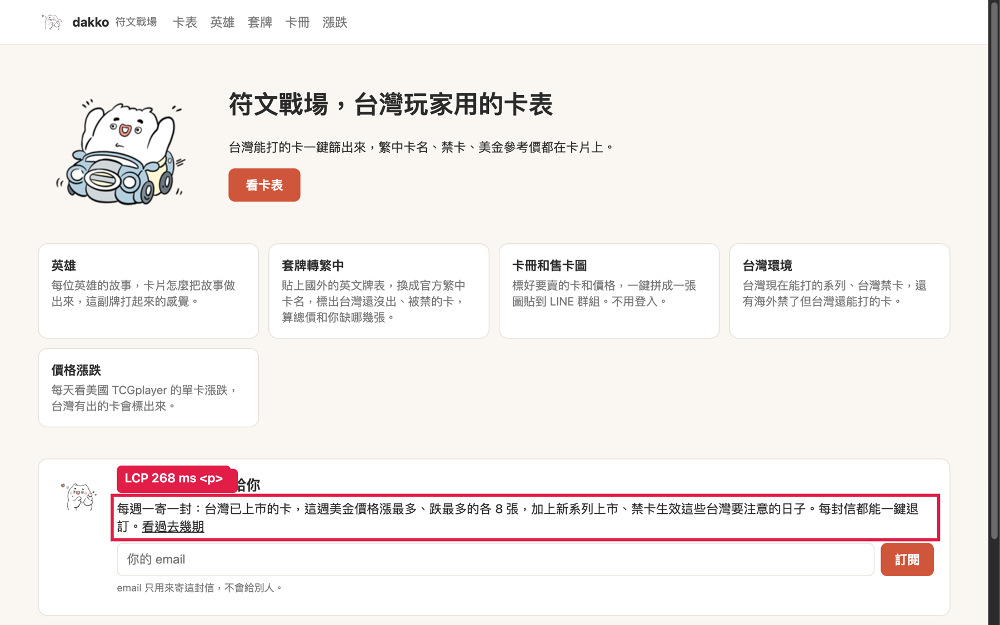

上線後，怎麼知道使用者等了多久
效能問題通常不會報錯。錯誤列表很乾淨，使用者只是覺得「怎麼卡卡的」。設幾個 alert，讓大的異常在使用者來報案之前先被我們知道。
起因：不會報錯的停頓
React 19 在新的樣式表還沒載入完時，會延後把畫面更新上去（commit），避免畫面先出現沒有樣式的內容。這是上游的設計行為，但在 Next.js 裡換頁時，使用者看到的就是畫面停了一下。
這類問題沒有 exception、沒有 log，只有「慢」。所以需要的是效能的監控和告警，不是錯誤的。
LCP 是什麼
Largest Contentful Paint：從打開頁面，到畫面上最大的那塊內容（主圖、標題、主要的文字區塊）畫出來的時間。它量的是使用者心裡覺得「頁面出來了」的那一刻。
看 p75，也就是 75% 的使用者在這個時間內看到：
≤ 2.5 秒好
2.5 – 4 秒需要改善
> 4 秒差
- 同一組的 Core Web Vitals 還有 INP（點下去多久有反應，200ms 內算好）和 CLS（畫面會不會跳）。
- Lighthouse 是在自己電腦上跑的實驗室分數；Sentry 收的是真實使用者的網路和裝置。看使用者的體驗，以真實數據為準。

LCP 慢，時間花在哪四段
- TTFB：等 server 回第一個 byte。
- 資源開始載入前的等待：瀏覽器多晚才發現要載這張圖或字型。
- 資源載入本身：圖或字型下載的時間。
- 畫出來前的延遲：東西都到了，還沒畫上去。被 JS、CSS 擋住就是這段。開頭那個 React 19 的停頓就屬於這一段。
四段不用背，記得「先問是哪一段」，Sentry 的時間軸看得出來。（web.dev: Optimize LCP）
注意：LCP 只在第一次打開頁面時量。Next.js 站內點連結換頁不會有 LCP。上面那種「換頁時等 CSS」的停頓，要看換頁本身的耗時（Sentry 的 navigation）和 INP。
Sentry 怎麼記錄
自動收的
開啟 tracing 之後，每次頁面載入（pageload）和換頁（navigation）都會記一筆，帶著 LCP、INP、CLS、TTFB，也會記下 LCP 是哪個元素。
Sentry.init({
dsn: process.env.NEXT_PUBLIC_SENTRY_DSN,
release: process.env.NEXT_PUBLIC_RELEASE, // 綁版本，上線前後才能比較
environment: 'production',
tracesSampleRate: 0.1, // 抽 10%，控制用量
});最有用的是 release：有了它，上線之後可以直接比新舊版本的 p75。

慢的那一筆，點進去看什麼
每一筆都是一條時間軸，不用另外設定：
- resource：每個 CSS、JS、圖片的載入時間（
resource.css、resource.script、resource.img）。 - long task：主執行緒被卡住超過 50ms 的時段（
ui.long-task）。

resource.link 是 CSS、resource.script 是 JS。這一筆最長的是 browser.request，問題在等 server，不在前端。（圖：Sentry 官方文件，Next.js 示範資料）換頁慢的那一筆點進去，就看得到是不是某個 resource.css 還沒載完、畫面一直在等。alert 告訴你「變慢了」，時間軸告訴你「卡在哪」。
自己打點的
自動收的只到頁面層級。業務流程上的關鍵節點，用 span 包起來：
await Sentry.startSpan({ name: 'order.submit', op: 'ui.action' }, async () => {
await submitOrder(data);
});- 送出表單 → 看到結果
- 搜尋或篩選 → 列表更新
- 進入頁面 → 權限檢查完成、確定能看到什麼
只挑三到五個「慢了使用者會來抱怨」的地方，不要每個 function 都包。
設定 alert
- 關鍵頁面的 LCPp75 > 2.5 秒持續 30 分鐘發 warning，> 4 秒發 critical。
- 換頁和關鍵操作navigation 和自己打點的 span，p95 超過平常的 1.5 倍。換頁時的停頓會出現在這一條。
- 上線後兩小時新版本的 p75 有沒有比上一版差。套件升級後特別要看。
門檻不知道怎麼訂，可以用 metric alert 的異常偵測（anomaly detection），讓它學平常的數值，偏離太多才通知。
讓 alert 不吵

- 看 p75 或 p95，不看單筆。
- 設最少樣本數，半夜流量少時一兩筆慢的不會觸發。
- 通知發到團隊頻道，不發給個人。
- 先觀察一週平常的數值，再訂門檻。
你負責的部分，哪一個操作慢了，使用者最先會來抱怨？那裡就是第一個值得打點的地方。